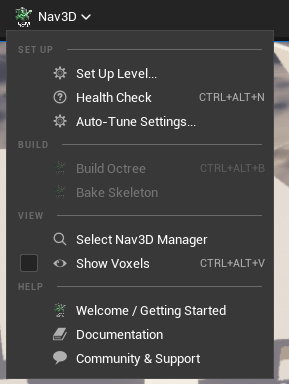
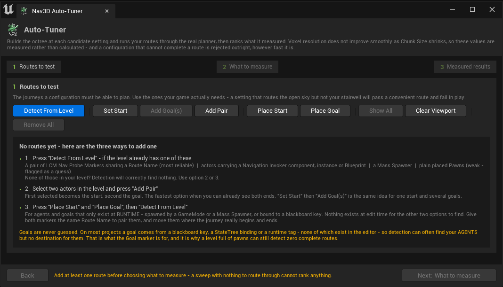
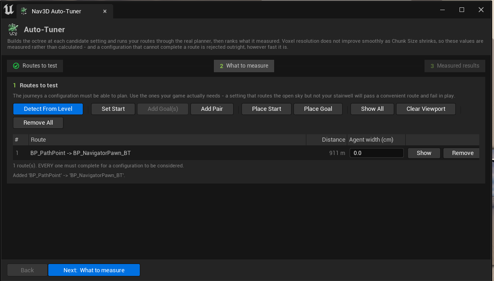
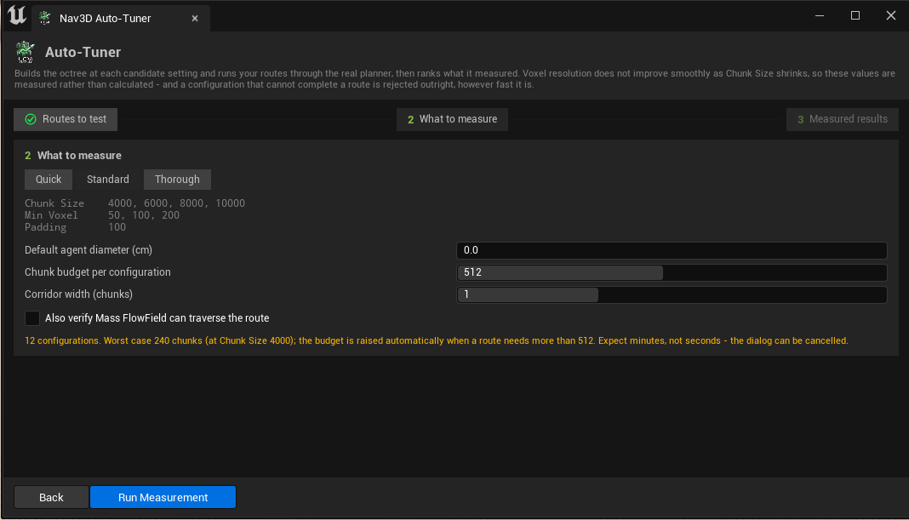

LCM Nav3D - Editor Tools
Everything here lives behind the Nav3D button in the Level Editor toolbar. The panels are also under Window ▸ Level Editor.

Figure 1 - The Nav3D toolbar menu. Four groups, in the order you need them. Greyed entries are not broken: Build Octree is finite-only and Bake Skeleton appears only when something will actually read a bake, so the menu never offers you an action that would be an expensive no-op.
Quick start
- Nav3D ▸ Set Up Level... - creates and configures the manager, picks finite or streamed navigation to match your map, attaches navigation invokers, and builds.
- Nav3D ▸ Health Check - dock it and leave it open while you work.
- Add the LCM Nav3D FlyTo task to a Behavior Tree or StateTree, or drop the Mass crowd traits on a spawner.
Nav3D actors are also in the Place Actors panel under LCM Nav3D.
Keyboard shortcuts
| Shortcut | Action |
|---|---|
Ctrl+Alt+N |
Health Check |
Ctrl+Alt+B |
Build Octree |
Ctrl+Alt+V |
Show Voxels |
Rebind or clear them under Editor Preferences ▸ Keyboard Shortcuts.
The Welcome screen
Opens once per plugin version, and any time from Nav3D ▸ Welcome / Getting Started.

Figure 2 - Welcome screen. The part worth reading is
REQUIRED PLUGINS: it checks the dependencies declared
in LCMNav3D.uplugin against what your project actually has
enabled, and offers an Enable button on any that are
off. If one is missing, the plugin's modules will fail to load - this
panel is where you find that out, rather than from a startup error.
Links under HELP & COMMUNITY are read from the
.uplugindescriptor, so the UI and the store listing cannot drift apart. A greyed link means that field is empty in the descriptor, not that the link is broken.
The Manager panel
Select the LCM Nav3D Manager in your level. Above the numbered settings sections you get a header card with live state pills (world model, residency, voxelizer), the context-appropriate build actions, and two readouts worth knowing about.

Figure 3 - Manager Details, top half. Read it downwards:
- The pills - world model, chunks resident, voxelizer. Three facts at a glance.
- Configuration Health - expands only while something is wrong. In this shot it is reporting that the authored invoker radius of 1,000 cm was raised to 8,000 by the Streaming Profile, because a radius below one Chunk Size leaves an agent with no neighbouring chunk and therefore no route at all.
- What You Get - the derived numbers you would
otherwise have to know a rule to predict. Finest leaf edge 250
cm with
Min Voxel Sizeat 100 is not a bug: the octree halves a chunk until the child drops below your voxel size, so the leaf isChunkSize / 2^kand lands between 2× and 4× the value you typed.
The build actions
Only the buttons that mean something in your world model are shown - a finite world has no chunks to skeletonize, and a streamed world has no single SVO to save.
| Button | World | What it does |
|---|---|---|
| Build SVO (Editor Preview) | Finite | Voxelizes now, into memory. EQS queries and the debug draw resolve without entering Play. Thrown away when you close the editor - it is a preview, not a build product |
| Bake to Asset | Finite | Writes the SVO to a ULcmSVODataAsset and attaches a
streaming proxy that loads it. The shipped game stops voxelizing the
world at every launch |
| Bake Skeleton | Infinite, and only when Use Baked Skeleton is on |
Whole-map coarse connectivity, so long-range routing is complete from frame 0 |
Bake to Asset uses the manager's own
World Extent, Min Voxel Size,
Clearance Padding and collision filters, so the bake cannot
describe a different world than the runtime expects. It records what it
was baked against, which is what lets the health section tell
you later that the bake has gone out of date. On success it also turns
Auto Build On Play off: leaving both on is not
belt-and-braces, because the proxy and the manager each write the
navigation data during BeginPlay with no ordering guarantee
between actors - which one wins is undefined, and when the rebuild wins
you pay the full load-time stall the bake exists to remove.
Re-bake after moving level geometry or changing the voxel settings.
Save the level after baking. The asset is written to disk immediately, but the streaming proxy that loads it is a level actor. Close without saving and you are left with a bake nothing reads - and
Auto Build On Playcleared on an actor that was discarded, so the level has no navigation at all.
The
LCM Nav3D Bake Volumeactor is the other way to bake, and it is for a different job - see Bake Volumes below. For a single finite world, the manager button is simpler and cannot disagree with the runtime settings. Both write the same asset format through the same code path.
Configuration Health
Setting combinations that no per-property clamp can express, checked live and shown where the settings are. Rows come in three tiers: ⚠ a real hazard, i a property worth knowing, ✓ an all-clear.
| ⚠ Warning | Why it matters |
|---|---|
| Voxel budget | Exceeding it does not fail - generation silently
coarsens Min Voxel Size until it fits, so you get less
precision than you configured |
| Clearance Padding vs Min Voxel Size | Padding inflates every solid surface, so padding ≥ 2× voxel size seals narrow openings. The right value is your agent radius, which only you know |
| Invoker radius vs Chunk Size | A radius under one Chunk Size leaves an agent with no
neighbouring chunks, so no route can be planned and nothing further
streams |
| Residency demand | An invoker bubble is a cube: chunks scale as
(2R / ChunkSize)³, so halving Chunk Size costs
8× the chunks |
| Baked asset out of date | A bake is a frozen snapshot and nothing at runtime can tell it stopped matching the level. It still loads - you just get agents avoiding open space or routing through geometry, with nothing logged |
| Auto Build On Play overrides the bake | Both write the navigation data during BeginPlay with no
ordering guarantee, so which one the level uses is undefined |
| i Information | What it tells you |
|---|---|
| Finest leaf vs the floor | The finest leaf is ChunkSize / 2ᵏ, landing anywhere in
[2×, 4×] Min Voxel Size non-monotonically.
Not a defect - see below |
Why the leaf ratio is information, not a warning. It depends only on
Chunk Size(it is identical at everyMin Voxel Size), so it really asks "is Chunk Size a power-of-two multiple of the voxel floor" - and the Auto-Tuner's own candidate grid fails that test on most of its entries. Whether a coarse leaf actually hurts - a sealed opening, an unroutable pair - cannot be decided from the settings, and is exactly what the tuner measures. So the panel states the fact and lets the measurement carry the verdict.
What the staleness check can and cannot see. It compares the voxel settings the bake ran with, and an order-independent hash of every collidable actor inside the baked bounds - identity, transform, scale and local bounds. So it catches geometry moved, added, removed or rescaled, which is nearly always what "the level changed" means. It does not walk source triangles, so a mesh edited in place - same actor, same transform, new geometry - hashes identically. Re-bake after editing a mesh. Assets baked before this signature existed report as unverifiable rather than stale.
When a ⚠ row is present the section offers one action: Tune Settings..., which opens the Auto-Tuner. There are deliberately no per-warning "apply this value" buttons - such a value would be derived, and this system's search space is non-monotonic, so only measurement can answer it.
These are the same checks that have always been written to the Output Log - the log is now a consumer of the same rules, so the two can never disagree.
What You Get
The values your settings actually resolve to, rather than the ones you typed:
| Row | Note |
|---|---|
Navigable volume |
Finite only. The real world-space bounds - see the note below |
Finest leaf edge |
The real smallest voxel, with its ratio to the achievable floor
(2 × Min Voxel Size) |
Voxels / chunk (or / world) |
Against the hard budget |
Chunk builds / frame |
Derived from the Streaming Profile |
Invoker radius floor |
What the profile raises an invoker's radius to, if anything |
The finite volume is centred on the world origin, not on the manager actor.
World Extentis a half-extent, so the volume spans[-WorldExtent, +WorldExtent]on each axis around(0,0,0). The manager is a logical singleton with no root component, so moving it does not move the navigable volume. Build your playable space around the origin, or use an infinite world.
Why the panel is short
The manager has no geometry, no collision and no transform, so the inherited Actor sections that cannot apply - Rendering, Collision, Physics, LOD, Cooking, Input, HLOD, Mobile, Ray Tracing, Texture Streaming, Virtual Texture - are hidden from this panel. They still exist on the class; they are just noise here.
Replication, Actor (tags) and
World Partition are deliberately kept: the manager
hosts multicast RPCs, tags are a legitimate way to find it from
gameplay, and Is Spatially Loaded genuinely matters for a
singleton that must not stream out.
Bake Volumes
Drop an LCM Nav3D Bake Volume from the Place Actors panel and resize the brush to cover the area you want baked. Its panel uses the same language as the manager's - header pills, one action, Configuration Health, What You Get.
I want two separate areas navigable. Which setup?
Grid mode + Infinite World. Nothing else does it. This is the single most common wrong turn, so it is worth being blunt about why:
A finite world has exactly one navigation volume - one slot, in memory. A single-volume Bake Volume writes it. The manager's Bake to Asset writes it. Both write it at the same chunk coordinate, so whichever ran last wins and the other area has no navigation at all. Overlapping the two does not join them - there is nothing in a finite world that could hold both. Baking area A, then baking area B, and finding only B navigable is the system working exactly as a finite world is defined, not a bug in the bake.
| What you want | Setup |
|---|---|
| One area | Either producer - a single-volume Bake Volume or the manager's Bake to Asset. Not both |
| One bigger area | Enlarge the volume, or raise the manager's
World Extent |
| Two or more separate areas | Snap To Global Grid on each volume +
Infinite World on the manager |
The manager's Bake to Asset now refuses to run while a single-volume Bake Volume is in the level, rather than silently replacing its output, and both Details panels flag the pair.
One volume or many?
This is the Snap To Global Grid switch, and the answer
differs because the two settings feed different runtime
containers:
Snap To Global Grid |
Produces | Manager must be | How many volumes |
|---|---|---|---|
| Off | One chunk, sized to this volume | Finite world | Exactly one |
| On | One chunk per grid cell | Infinite world | As many as you like |
Off feeds the manager's single navigation slot, so a
second single-volume bake has nowhere to go: both write the same asset
name at the same chunk coordinate, and only the last one baked survives.
To cover more ground with one volume, enlarge it - or raise the
manager's World Extent.
On feeds a coordinate-keyed container that holds any
number of chunks. This is the multi-region workflow, and it needs
Infinite World on the manager. With a finite
manager every proxy is routed into the one slot instead, so each chunk
silently overwrites the last. The header pill turns amber when the two
disagree, and Configuration Health says which way to resolve it.
"Infinite World" names how navigation is stored and streamed, not whether the data is generated at runtime. A fully baked, grid-aligned world is still an infinite-mode world - the chunks just arrive from disk instead of the voxelizer.
Do several connected volumes route across their seams?
Yes. Chunks are keyed by grid coordinate, so which
volume produced a chunk does not matter; adjacent chunks connect the
same way whether they came from one volume or four. What matters is that
every volume uses the same Chunk Size,
Min Voxel Size and Clearance Padding (the
panel checks all three), and that they are grid-aligned, which
Snap To Global Grid guarantees.
Seams are scanned at bake time and shipped with each chunk, so long-range routing across a chunk boundary is correct from the first frame.
Assets baked before 2026-08-03 are different, and the panel will tell you. They carry no seam data, so each boundary loaded as one full-face portal - a portal asserting the whole shared face was passable without checking the voxels, corrected only once an agent physically entered the chunk. A walled seam therefore looked open to long-range routing. The failure was a route that exists on the macro graph but not in the world, which is why it survived casual testing. Re-bake to fix it; Configuration Health reports how many chunks are still in that state.
Very large grids are the one exception. Scanning seams needs the
whole grid resident at once (a portal is a property of the boundary
between two chunks), so past
r.LcmNav.Bake.MaxMacroChunks (default 1024) the bake falls
back to writing chunks one at a time with no seam data. That is logged,
and the completion dialog says so. Raise the cap if you have the memory,
or bake in smaller volumes.
What the volume panel checks
Every rule here is about two actors disagreeing. The bake volume carries its own copy of the voxel settings and nothing reconciles them at runtime, so a mismatch does not fail - it bakes, it loads, and navigation is computed against a world that is not there.
| ⚠ Warning | Why it matters |
|---|---|
| Bake mode vs manager world model | Decides whether the chunks land in the single slot or the keyed container - the table above |
Chunk Size ≠ the manager's |
Baked chunks are placed at
coordinate × the runtime Chunk Size, so a mismatch puts
every chunk in the wrong place and makes the streamer
regenerate the map at load |
Min Voxel Size / Clearance Padding ≠ the
manager's |
The bake describes a differently-shaped world, and the staleness check compares against the manager's values - so the bake reads as out of date the moment it is written |
| Two single-volume bake volumes | Same asset name, same coordinate: silent overwrite |
| Voxel budget per chunk | Exceeding it coarsens Min Voxel Size silently, which is
what voxelizes narrow openings shut |
| More than 512 chunks | The bake is synchronous on the game thread with no cancel, and writes one asset each |
| Baked chunks without precomputed seams | Assets from before 2026-08-03, or past the macro-bake cap - see the seam section above. Re-bake | | The manager also bakes this volume | Two producers, one finite slot - see the top of this section | | Oblong brush in single-volume mode | An octree root is a cube, so the bake inflates to the largest axis on all three and pays voxels for the remainder |
Sizing the brush, and why the numbers don't match it
Three things surprise people here, so the panel states all three under What You Get:
Brush Settingssize ×Transformscale. Both scale the volume, and the readout shows the product. It is one box, controlled from two places.- Single-volume mode bakes a cube. An octree root cannot be oblong, so the bake uses the largest half-extent on every axis: a 100 × 100 × 10 m brush bakes a 100 m cube, and the voxel budget is charged for all of it. That is why the budget row can dwarf the box you drew. Keep the brush roughly cubic, or switch to grid mode.
- Grid mode snaps outward. The brush is sliced on the global chunk lattice, so the baked region grows to whole chunk boundaries - straddling one by a centimetre costs an entire extra row of chunks. The Actually voxelized row shows the real region and count.
Chunk Size is hidden unless
Snap To Global Grid is on, because it is not read otherwise
- resolution comes from Min Voxel Size in both modes. When
it is shown, it is snapped to a whole multiple of
Min Voxel Size as you type (chunk edges must land on voxel
boundaries), so the panel reports the value actually in use, and flags
it if the manager disagrees.
| i Information | What it tells you |
|---|---|
| No obstacle channels set | Empty falls back to WorldStatic only;
anything solid on another channel bakes as open air |
There is deliberately no fix button here. Every warning is two settings disagreeing, and either side may be the one that is wrong - that is a choice only you can make.
After baking, the debug view shows the result
Baking from a volume used to draw nothing while the manager's own
build drew immediately, which looked like the bake had failed. It had
not - the debug renderer reads the manager's in-memory
navigation, and a bake writes assets and spawns proxies that inject
nothing until BeginPlay. The bake now loads its own output
back into the editor manager, so both paths look the same. Tick
Draw Debug Volumes on the manager to see it.
Setup Wizard
One page, because every control feeds the same live readout.

Figure 4 - Setup Wizard. Note what section 1 has already worked out on its own: this is a World Partition map, so section 2 tells you Infinite is the only correct choice and says why - a finite octree would be built over cells that are not loaded. Section 4 is an explicit checklist, so nothing happens that is not written on screen, and section 5 re-runs the configuration check against the settings you are proposing rather than the ones currently saved.
| Section | What it does |
|---|---|
| What's in this level | World Partition, geometry size, manager count, pawns, the GameMode's default pawn |
| Navigation mode | Finite vs Infinite, plus the Streaming Profile |
| Resolution | Chunk Size / World Extent, Min Voxel Size, Clearance Padding |
| What will be done | An explicit checklist - nothing happens that isn't listed |
| Configuration check | Live problems, updating as you change settings |
Under What will be done,
Build the octree now has a companion: ...and save
it to an asset. That is the same voxelization with its result
saved rather than discarded - the wizard's route to the Bake to Asset flow. It is off by default,
unlike the other actions: those are reversible edits to settings, while
this one writes content to /Game/LcmNavigation/BakedData
and adds an actor to your level. Save the level afterwards.
The resolution readout
Finest voxel you actually get: 250 cm (best possible here: 200 cm - 1.25x)
This is the most important line in the wizard. The
finest leaf is ChunkSize / 2^k, so it lands between
2x and 4x your Min Voxel Size and moves
non-monotonically with Chunk Size. Measured at Min
Voxel Size 100:
| Chunk Size | Finest leaf |
|---|---|
| 3000 | 375 cm |
| 5000 | 312 cm |
| 7000 | 219 cm |
| 8000 | 250 cm |
A smaller chunk can give you a coarser voxel. Openings narrower than the leaf voxelize shut, which is why "it works at one Chunk Size and not another" is a real effect and not a bug in your level.
Everything the wizard does is one undo step. Nothing is saved for you.
Health Check
A dockable panel that reports anything which would stop agents moving, with a Fix button on each row.

Figure 5 - Health Check, on a level that passes. The
verdict is one word - READY, WORKS, WITH
WARNINGS or NOT READY - coloured and sized so
it reads from across the room. Fix All greys out when there
is nothing to bulk-fix, which is the state you want to end up in and
then stop thinking about. Dock this panel and leave it open; it
re-inspects itself whenever the map, its actors or any Nav3D setting
changes.
- Fix All applies every automatic repair, except ones that edit a Blueprint asset - those keep their own button, so changing your content is always a deliberate click.
- Show In Viewport draws the findings that have a position, for 30 seconds: the finite navigable volume in blue, your level's geometry bounds in red when they extend past it, and a marker over every pawn missing a Navigation Invoker. Read-only; it changes nothing.
- Refresh is automatic on map open, actor add/delete, and Nav3D setting changes.
⭐ The volume box is worth looking at once.
World Extentis a half extent and the box is centred on the world origin, not on the Manager actor - the Manager has no root component, so dragging it 500 m away moves nothing. Everyone reads that in the tooltip; nobody believes it until they see the box sitting somewhere other than around their level.
Typical findings: no manager, more than one manager, a World Partition map set to Finite, no navigation invoker anywhere, over the voxel budget, Clearance Padding wide enough to seal openings.
Invoker radius below one Chunk Size is the classic one. The agent has no neighbouring chunks, so no route can be planned, so nothing further streams - and it looks exactly like "the AI refuses to move". The Automatic, Quality and Performance streaming profiles floor it for you; Manual does not.
Auto-Tuner
Builds the octree at each candidate setting, runs your routes through the real planner, and ranks what it measured.
It runs as three steps, shown as a rail across the top:
1 Routes to test → 2 What to measure → 3 Measured results
- Back is always available. The loop is measure → look → adjust → measure again, so going back to fix a route is never punished.
- Forward is gated, and a disabled Next always states why in the footer: no routes yet, no Nav3D Manager in the level, or Play is running.
- A step is ticked in the rail once it is done. Step 3 only ticks when a configuration was actually recommended - a sweep where nothing completed every route is a finished run and an unfinished job.
- On step 2 the footer button is the run: Run Measurement, which advances to the results when it finishes. On step 3 it becomes Measure Again.

Figure 6 - Step 1, before you have added anything. The empty state is the screen every user sees first, so it does the teaching: three numbered ways in, each naming what must already be in your level for it to work. Note the footer - the Next button is disabled and the reason is printed beside it in amber rather than hidden in a tooltip.
Choosing routes
A route is a journey your agents actually make. Every one must complete for a configuration to be considered, so use the journeys your game depends on - a setting that routes the open sky but not your stairwell will pass a convenient route and fail in play.
Start with Detect From Level. The toolbar above the list is grouped by intent, left to right:
| Group | Buttons | When |
|---|---|---|
| Find them for me | Detect From Level | Always try this first. Appends; never replaces hand-built routes, and skips duplicates. |
| Build from selection | Set Start, Add Goal(s), Add Pair | You can see the endpoints in the level. |
| Place by hand | Place Start, Place Goal | Agents or goals only exist at runtime. |
| View | Show All, Clear Viewport | Check the endpoints before spending minutes on a sweep. |
| Discard | Remove All | - |
What "Detect From Level" needs
Detection reads specific things out of the level. If none of them are there it correctly finds nothing - so this is the checklist for making it work, in descending order of confidence:
| It looks for | You get |
|---|---|
| A pair of LCM Nav Probe Markers sharing a Route Name | The most reliable result - you stated the route explicitly |
| Actors carrying a Navigation Invoker component (instance or Blueprint) | Start points, from the actual Nav3D agent signal |
| An AMassSpawner | A start at the spawner's location |
| Plain placed Pawns | Starts, flagged as a weak guess |
⭐ Goals are never guessed, and this is the usual reason detection "does nothing". On most projects a goal comes from a blackboard key, a StateTree binding or a runtime tag - none of which exist at edit time. So a level full of pawns can detect plenty of agents and still produce zero complete routes. That is exactly what the Goal marker is for.
When detection adds nothing, the panel says which of those cases you are in and what to do about it, rather than reporting "0 routes added".
Detection appends - it never replaces routes you built by hand, and it skips duplicates by endpoint.
Building routes by hand
- Add Pair - select exactly two actors; the first becomes the start, the second the goal. The fastest option when you can already see both ends.
- Set Start / Add Goal(s) - pin one start, then add
many goals against it. While a start is pinned the panel shows a chip
naming it, with an Unpin button;
Add Goal(s)is disabled until one is pinned. - Probe markers - place a Start and a Goal marker and give both the same Route Name, then press Detect. This is how you tune projects whose agents and goals only exist at runtime. An unpaired Goal marker pairs with every detected agent.
Each route carries its own agent width (diameter,
cm), editable on its row - a gap a drone fits through may be unusable
for a gunship, so one sweep can answer for a mixed fleet. 0
applies no size filtering.
Press Show on any route to highlight it in the viewport with the others drawn faintly for context.

Figure 7 - Step 1, with a route added.
Add Pair named it after the two actors it came from, in
order, so a reversed route is obvious rather than something you debug
later. Two things changed in the chrome the moment the route existed:
step 1 in the rail gained a tick, and the footer's
Next turned live.
Step 2 - What to measure

Figure 8 - Step 2. A preset never leaves you guessing what it means: the exact Chunk Size, Min Voxel and Padding values it will try are printed underneath it. The amber line is the honest cost estimate - configuration count, worst-case chunk count and which Chunk Size produces that worst case, because a smaller chunk needs more of them for the same route.
Leave Also verify Mass FlowField can traverse the route off unless you ship a FlowField crowd. Behaviour Tree, StateTree and Mass PathFollowing all dispatch through the same planner the tuner already queries, so they are covered either way; FlowField is a different solver and costs an extra field solve per chunk per route.
How it ranks
- Completeness is a hard gate. A configuration that cannot plan a route is rejected however fast it is. "Complete" means the path reaches the goal, not merely that the query returned success.
- Among the survivors you get three picks - Best Quality (finest measured voxel), Fastest (cheapest to build and hold) and Recommended (the finest voxel within twice the cheapest one's memory).
The full matrix is always shown, so you can disagree on the merits. Click any column header to sort by it - the three picks keep their badges wherever they land, and sorting back to no column restores the ranked order. Copy Table puts every measured row on the clipboard as tab-separated text, which is a far better thing to attach to a support thread than a screenshot.

Figure 9 - Step 3, measured results. How to read a row:
| Column | Read it as |
|---|---|
| Routes | The hard gate. Green 1/1 survived; red 0/1
is out no matter how good the rest of the row looks. |
| Leaf | The measured finest voxel - the number that decides what fits through a gap. Sort by it to rank quality. |
| Ratio | Path length ÷ straight-line distance. 1.00 is a
straight line; nothing can be lower. |
| Build / Memory | What the configuration costs to produce and to hold. Sort by Memory to rank cost. |
| ⚠ icon | This row could not route, or its build hit the chunk budget. Hover the row for the reason. |
Show is enabled on failed rows too, where Apply is not. That asymmetry is deliberate: applying a broken configuration would be wrong, but looking at one is the whole point - the red rings it draws mark where each route gave up, and that position is usually the answer.
Seeing the routes
A route you cannot see is a route you cannot check, and the single mistake that invalidates a whole sweep - an endpoint sitting inside a building or under the terrain - measures as "no configuration can route this level", which looks exactly like a real finding.
- Show In Viewport (routes card) draws every route for 30 seconds: sphere = start, box = goal, thin grey line between them. The line is the straight line, not a path - it makes no claim that a route exists.
- Show (on any measured row) draws the waypoints that configuration actually produced. Completed routes are green.
- A route that stopped short is marked with red rings at the last waypoint, and a thin line to the goal it never reached.
⭐ The red rings are usually the whole answer. A route that gives up against a doorway, vent or stairwell was not blocked by your level - it was blocked by Clearance Padding, which inflates every solid surface and seals openings narrower than the leaf voxel. Lower the padding and re-measure before concluding the level cannot be navigated.
Show is deliberately enabled on failed rows too, where
Apply is not: applying a broken configuration would be
wrong, but looking at why it broke is the point.
What it does and does not cover
| Behavior Tree, StateTree, Mass PathFollowing | Covered - all use the same planner |
| Mass FlowField | Covered only with "Also verify Mass FlowField..." ticked - it is a different solver |
| Streaming (invoker radius, builds per frame) | Not tuned - that is the Streaming Profile's job |
| Dynamic obstacles | Voxelized where they currently sit; their motion is not simulated |
Park moving obstacles in the positions that most constrain navigation before tuning, and set each route's agent diameter to whatever actually flies it.
A sweep voxelizes the level once per configuration. Expect minutes, not seconds. The progress dialog can be cancelled, and your settings are restored either way - nothing changes until you press Apply on a row.
Project Settings
Project Settings ▸ Plugins ▸ LCM Nav3D. Project-wide only - anything that can differ between two levels lives on the Manager actor, where it is saved with the level.
Content Locations
| Setting | Default |
|---|---|
| Baked Navigation Path | /Game/LcmNavigation/BakedData |
| Baked Skeleton Path | /Game/LcmNavSkeletons |
Changing a path does not move an existing bake, but it does not orphan one either: the loaders probe the configured path first and the shipped default after, so an already-baked level keeps loading. Re-bake to migrate it properly.
New Level Defaults
What the Setup Wizard proposes for a level with no manager yet - Chunk Size, World Extent, Min Voxel Size, Clearance Padding, Streaming Profile and the obstacle collision channels. Set these once and "the way we set up a level here" stops being a convention someone has to remember.
They are proposals. Measured level geometry still overrides the world extent, an existing manager's authored values still win, and nothing here rewrites a level that is already configured.
If your project puts level geometry on a custom collision channel, adding it here is the difference between a one-time setup step and a bug on every new level. An empty channel list voxelizes the world as open air, and that failure is silent - open air passes every clearance filter and every quality metric.
Console Variable Overrides
A map of r.LcmNav.* / r.LcmGPU.* names to
values, applied at startup. This is the escape hatch for the ~345
console variables the page deliberately does not curate:
pinning one here puts it in DefaultGame.ini, so it is
version-controlled, survives a restart, and is visible to the whole
team.
- Applied at project-setting priority - they beat a variable's built-in default and lose to the command line or anything typed into the console, so a local debug override is never stamped back over.
- A name that is not a registered variable is warned about in the log, not silently ignored.
Most of these variables exist to A/B a research question and their correct shipping value is the default. Check first whether the behaviour you want is already a real property on the Manager or on the FlyTo task - it usually is, and a property is saved with the asset that needs it instead of applied to everything.
Keyboard shortcuts
| Shortcut | Action |
|---|---|
Ctrl+Alt+N |
Health Check |
Ctrl+Alt+B |
Build Octree |
Ctrl+Alt+V |
Show Voxels |
Rebind or clear them under Editor Preferences ▸ Keyboard Shortcuts.
Where things are configured
| Setting | Where |
|---|---|
| World type, voxel sizes, collision channels | Nav3D Manager, Details panel |
| Streaming aggressiveness | Manager ▸ Streaming Profile |
| Per-agent size, smoothing, solver | The FlyTo task / Mass trait |
| Output paths, new-level defaults, pinned CVars | Project Settings ▸ Plugins ▸ LCM Nav3D |
| Everything else | r.LcmNav.* console variables |